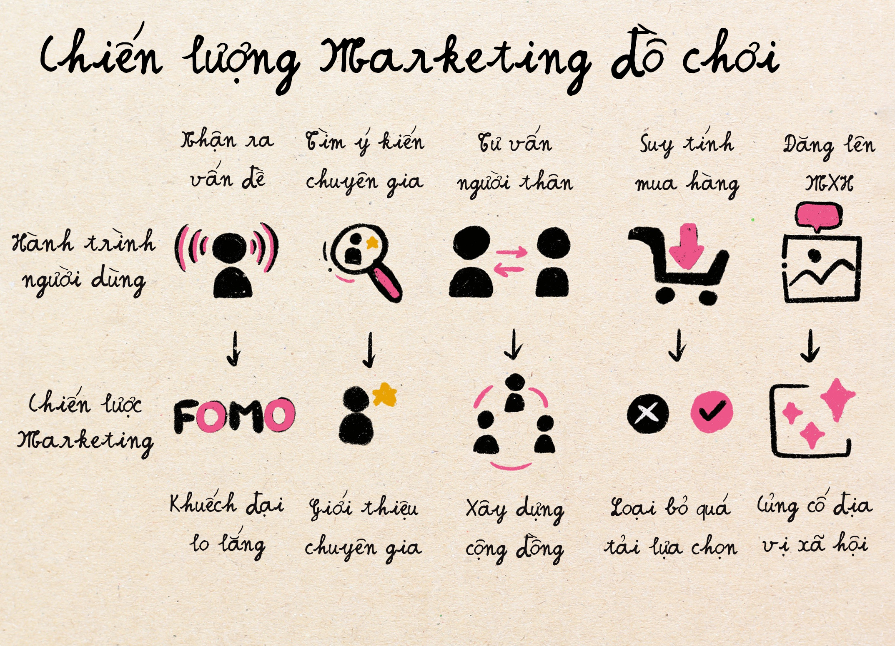
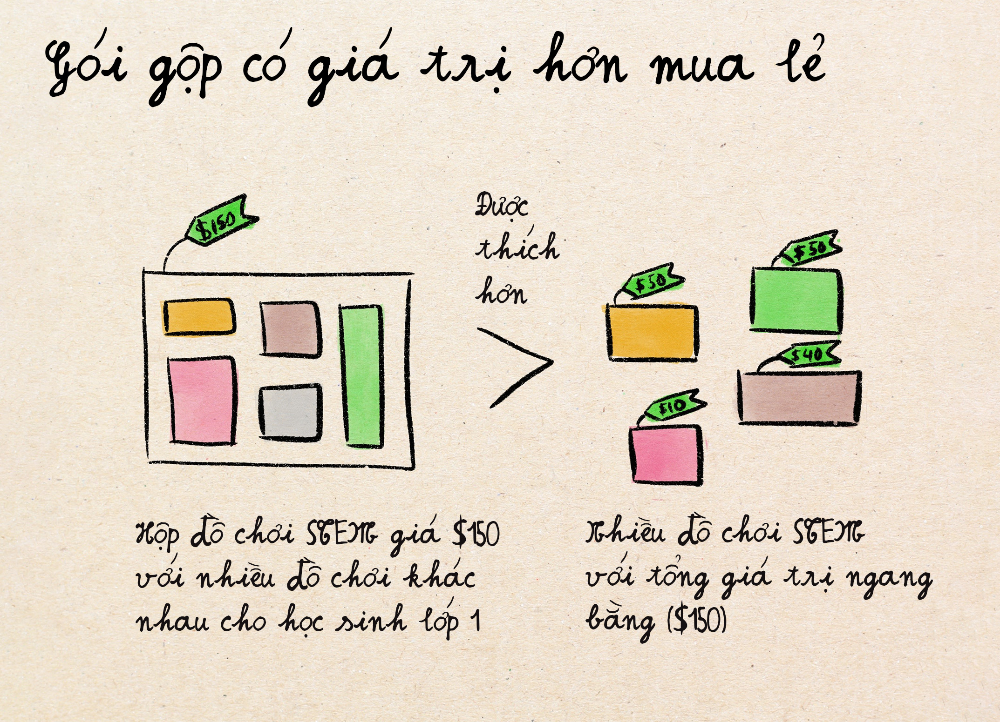
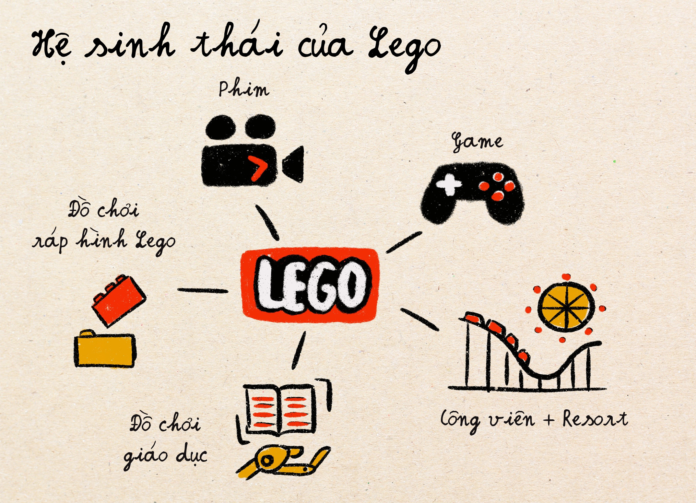

Phân tích ngành đồ chơi: sản phẩm cho những kẻ độc tài tí hon
Sự khác biệt giữa ngành đồ chơi và các ngành khác
Từ xưa tới giờ phải thú thực đồ chơi, đặc biệt là đồ chơi giáo dục là mảng mà mình cực kỳ quan tâm, cũng là ngành mình muốn khởi nghiệp. Thế nên mình muốn đi sâu vào ngành này trong bài viết cuối, mặc dù nó ít liên quan hơn tới công nghệ.
Nhìn ở diện rộng, 3 đặc điểm chính khiến ngành đồ chơi đặc biệt khác với các ngành khác bao gồm:
- Phân khúc khách hàng cực kỳ nhỏ. Trong khi trong các mảng khác, phần lớn khách hàng có hành vi và nhu cầu tương đối ổn định. Người dùng trong mảng đồ chơi có rất nhiều nhu cầu khác nhau và thay đổi cũng rất nhanh chóng. Một món đồ chơi hoàn hảo cho trẻ 18 tháng tuổi lại có thể hoàn toàn nhàm chán đối với trẻ 24 tháng tuổi. Kết quả là để tạo ra sản phẩm phục vụ trẻ, bạn phải tập trung vào phục vụ các phân khúc khá nhỏ chứ không thể có một sản phẩm đại trà. Xây dựng một sản phẩm duy nhất thu hút cả trẻ 2 tuổi và 6 tuổi thì cũng giống như thiết kế một chiếc xe hoạt động cho cả việc đi lại trong thành phố và đua xe Formula 1.
- Người mua hàng (bố mẹ) không phải là người sử dụng hàng (trẻ con). Có nghĩa là khi marketing cho người dùng, các công ty đồ chơi sẽ phải marketing cho cả hai đối tượng khác nhau: trẻ và bố mẹ. Ta sẽ đào sâu vào đặc điểm này ở phần 1.
- Khách hàng thường không trung thành với thương hiệu, và vì thế rào cản thâm nhập thị trường không quá cao nhưng nỗ lực giữ chân khách hàng lại cực cao. Bài viết này sẽ tập trung vào các chiến lược các công ty trong ngành đồ chơi trẻ em sử dụng để giải quyết bài toán "thu hút & giữ chân" khách hàng này.
Vì những đặc điểm khác biệt trên, các chiến lược và mô hình kinh doanh trong ngành đồ chơi trở nên cực kỳ đa dạng so với các ngành khác. Nếu bạn có thể phân tích và hiểu được cách ngành đồ chơi hoạt động, việc phân tích nhiều ngành khác có thể trở nên đơn giản hơn.
Phần 1: Phục vụ người mua lẫn người dùng
Trong mọi ngành khác, người muốn sản phẩm là người trả tiền cho sản phẩm. Ngành đồ chơi hoạt động theo một nguyên tắc hoàn toàn khác:
- Người Dùng (Trẻ em): là đối tượng sử dụng sản phẩm và quyết định độ hài lòng của khách hàng. Nếu đối tượng này không thích sản phẩm thì hoàn toàn ảnh hưởng tới độ thành công của sản phẩm đó. Thế nhưng, họ không hề có hay hiểu giá trị tiền bạc của việc mua hàng.
- Người Mua (Cha mẹ): Có tất cả quyền lực tài chính để đưa ra quyết định mua hàng, nhưng vẫn bị ảnh hưởng nhiều bới sở thích của người dùng (trẻ em). Họ cũng có nhu cầu riêng khi mua hàng để đảm bảo hoàn thành "trách nhiệm của cha mẹ" trong việc nuôi con. Nhu cầu này thường mâu thuẫn với nhu cầu của người dùng (con của họ): Trẻ em thì muốn vui, cha mẹ thì muốn đồ chơi có tính giáo dục và đáng tiền.
Sự khác biệt giữa người mua và người dùng dẫn tới vấn đề quyết định khi mua hàng. Ngay cả khi trẻ em yêu thích sản phẩm của bạn, cha mẹ có thể không muốn mua. Ngay cả khi cha mẹ chấp thuận, trẻ em có thể không muốn dùng. Quyết định mua hàng thường diễn ra sau các cuộc "đàm phán" phức tạp giữa hai bên với quyền lực không bình đẳng và mục tiêu khác nhau. Và là công ty bán hàng, bạn cần sự chấp thuận từ cả hai bên mới có thể thành công.
Các công ty thành công trong việc "thuyết phục" của trẻ em lẫn bố mẹ là công ty biết cách giải quyết nhu cầu của cả hai đối tượng này và marketing nó một cách hiệu quả. Ví dụ:
- Lovevery: đồ chơi gỗ đẹp và hấp dẫn cho trẻ em và phù hợp với lứa tuổi + marketing cho cha mẹ như các công cụ giúp trẻ em xây dựng kỹ năng và được thiết kế bởi chuyên gia.
- Lego: đồ chơi xếp hình thú vị với nhiều nhân vật mà trẻ em thích + marketing cho cha mẹ như đồ chơi STEM (khoa học) giúp trẻ phát triển kỹ năng không gian và kỹ thuật.
- Melissa & Doug: đồ chơi nghệ thuật và đồ chơi tưởng tượng / giả vờ mà trẻ em thường cực thích + marketing cho cha mẹ như cách khuyến khích "sự sáng tạo và trí tưởng tượng của trẻ mà không cần dùng tới TV, điện thoại".
Phần 2: Tâm lý học trong marketing đồ chơi cho trẻ
Đặc điểm thứ 3 giải thích bên trên: sự không trung thành với thương hiệu, khiến cho đồ chơi trở thành thị trường dễ nhất để gia nhập nhưng cũng là thị trường khó nhất để thành công. Rào cản gia nhập cực kỳ thấp là vì bạn có thể thuyết phục bất kỳ ai mua hàng nếu biết marketing đúng cách. Nhưng khó thành công là vì có quá nhiều tay chơi khắp mọi nơi với nhiều sản phẩm copy y chang nhau.
Vì bạn không thể dựa quá nhiều vào sự khác biệt của sản phẩm hoặc lòng trung thành của khách hàng, thành công phụ thuộc khá lớn vào chiến lược marketing và khả năng ảnh hưởng tâm lý cha mẹ tại thời điểm quyết định mua hàng. Các biện pháp marketing đánh vào tâm lý cha mẹ trở thành trọng tâm của cuộc chơi – bên dưới mình sẽ liệt kê một số biệt pháp chính khá thú vị hay được sử dụng trong ngành.
Chiến lược Marketing #1: Khuếch đại lo lắng & hội chứng sợ bỏ lỡ (FOMO)
Tưởng tượng Ly là một bà mẹ có con 1 tuổi đang lướt Instagram khi cho con bú lúc 3 giờ sáng. Cô ấy thấy một bài đăng từ @giadinh_montessori có hình ảnh một phòng chơi đẹp, tối giản với đồ chơi gỗ được sắp xếp trên kệ thấp. Dòng chú thích hình ảnh viết: "Tạo môi trường hỗ trợ học tập tự nhiên trong khung cửa sổ phát triển quan trọng của trẻ 🌱." Bộ não thiếu ngủ của Ly ngay lập tức bắt đầu chạy tăng tốc: Khung cửa sổ phát triển quan trọng? Mình đã lỡ mất nó chưa? Giỏ đồ chơi nhựa của thằng cu nhà mình có đang cản trở sự phát triển của con không? Và tiếp theo đó là hàng tiếng đồng hồ lướt các chuỗi bài viết về phương pháp giáo dục và đồ chơi Montessori.
Đây là một câu chuyện khá quen thuộc với các ông bố bà mẹ. Nhiều công ty đồ chơi hiểu rằng bố mẹ thời nay luôn sống trong trạng thái lo lắng về sự phát triển của con cái, và cách nhanh nhất để thu hút họ biến thành người mua hàng là khuếch đại các nỗi lo hay hội chứng sợ bỏ lỡ (FOMO) này: nỗi lo con bị tụt lại phía sau, nỗi lo con không có các hoạt động phù hợp độ tuổi và bỏ lỡ những cột mốc quan trọng, nỗi lo con không có những thứ các bạn có và sẽ không hoà nhập được với xã hội, v.v.
Cái hay ở đây là khi "quảng cáo" các nỗi lo này, nó không tạo cảm giác như một quảng cáo hoặc tiếp thị thông thường, mà lại khiến cho bố mẹ cảm thấy như đang được chỉ bày, giáo dục về cách dạy con. Các bài viết kiểu vầy được thiết kế cẩn thận để khiến các ông bố bà mẹ cảm thấy lựa chọn hiện tại của mình chưa đủ tốt cho con.
Chiến lược Marketing #2: Giới thiệu chuyên gia giúp bố mẹ giải quyết lo lắng
Khi mẹ Ly đang cảm thấy lo lắng về lựa chọn đồ chơi của mình, cô ấy cần tìm ai đó để nghe theo và tin tưởng. Đây là đúng lúc các chuyên gia được "giới thiệu" qua các bài viết. Ly nhấp vào trang của @giadinh_montessori và nhận ra rằng những món đồ chơi được giới thiệu trên hình là từ công ty Lovevery, chuyên hợp tác với các chuyên gia phát triển giáo dục trẻ em để thiết kế các loại đồ chơi mang tính giáo dục cao cho trẻ. Lovevery trên thực tế đã chi rất nhiều tiền để "xây dựng" hình ảnh chuyên nghiệp đáng tin cậy này, thuê chuyên gia vào đội thiết kế sản phẩm, sử dụng ngôn ngữ khoa học trong giáo dục, và kiếm các huy hiệu tán thành từ các tổ chức liên quan tới giáo dục và quảng cáo nó trên trang của họ.
Nhờ có những "dấu hiệu" được quảng cáo mạnh mẽ trên trang, Ly không cảm nhận Lovevery như một công ty đồ chơi cố gắng bán hàng nữa, mà coi họ như những chuyên gia giúp cô đưa ra quyết định nuôi dạy con tốt hơn.
Chiến lược Marketing #3: Xây dựng cộng đồng
Sử dụng thẩm quyền chuyên gia tuy là một chiến lược tốt nhưng vẫn không bằng được sự thuyết phục đến từ chính người dùng khác. Để tạo ra hiệu ứng Social proof (bằng chứng xã hội - là việc sử dụng các bằng chứng từ người dùng khác để chứng minh giá trị và độ tin cậy của sản phẩm.), Lovevery tập trung xây dựng cộng đồng mạng xã hội trên Facebook page để chia sẻ thông tin chia sẻ từ các khách hàng đi trước và tư liệu về việc nuôi dạy con. Khi lướt qua các trang này, Ly nhìn thấy hàng nghìn cha mẹ khác chia sẻ hình ảnh con của họ chơi với đồ chơi của Lovevery, và còn được họ trả lời các câu hỏi một cách nhiệt tình với lời ca ngợi không ngớt về sản phẩm của Lovevery. Quyết định mua hàng của Ly trở nên dễ dàng hơn rất nhiều.
Các thể loại cộng đồng như thế này khiến người dùng có cảm giác được hỗ trợ thay vì liên tục bị "quảng cáo" ném thẳng vào mặt. Nó không chỉ cung cấp bằng chứng xã hội mà còn giúp xây dựng sự quen thuộc với thương hiệu, và giúp người dùng cảm thấy là một phần của nhóm người dùng đặc biệt có hiểu biết.
Chiến lược Marketing #4: Loại bỏ sự quá tải lựa chọn
Ngay cả khi Ly đã được thuyết phục Lovevery là sự lựa chọn đúng đắn và muốn mua hàng, các công ty đồ chơi thường có rất nhiều thể loại đồ chơi khiến cho người dùng "quá tải" và không biết bắt đầu từ đâu. "Decision paralysis" là khái niệm tâm lý học giải thích tình trạng khi một người bị tê liệt và không thể đưa ra quyết định do bị quá tải thông tin, quá nhiều lựa chọn hoặc sợ đưa ra sai lầm. Để giúp người dùng vượt qua được tình trạng này, nhiều công ty đồ chơi giáo dục mới như Lovevery lựa chọn đi theo mô hình "để chuyên gia chọn hàng giúp" và gửi sản phẩm tới nhà bạn hàng tháng. Bằng cách này, các ông bố bà mẹ không cần phải đưa ra lựa chọn gì nữa và có thể thoải mái tâm lý rằng có ai đó hiểu biết sâu hơn về mảng giáo dục đang quyết định chọn đồ chơi giáo dục giúp họ. Ta sẽ đi sâu thêm vào mô hình đăng ký hộp đồ chơi định kỳ (subscription box) này trong phần tới.
Chiến lược Marketing #5: Giúp người dùng củng cố địa vị xã hội (bằng cách "khoe")
Với các sản phẩm đắt tiền và trông "đẹp" như đồ chơi gỗ với màu sắc dịu, nâu trầm, việc đăng hình trên mạng xã hội để "khoe" hàng giúp Ly có cảm giác tự hào là một bà mẹ biết đầu tư vào công cụ phát triển được hỗ trợ nghiên cứu kỹ càng. Ly không chỉ là mua đồ chơi - cô ấy mua tư cách thành viên trong cộng đồng "cha mẹ hiểu biết, có ý thức." Việc thiết kế đồ chơi theo chiều hướng và phong cách thanh lịch không phải là để phục vụ cho khách hàng nhí mà là cho bố mẹ, khiến cho mặt hàng dễ lên Instagram hơn.
Không chỉ đồ chơi, các sản phẩm đắt tiền được thiết kế đẹp thường là biểu tượng địa vị giúp người mua thể hiện giá trị và mức thu nhập của bản thân, một điều mà càng ngày nhiều người càng quan tâm. Khi mình sống ở khu vực gần trung tâm New York chẳng hạn, đi ra ngoài đường là nhan nhản xe đẩy em bé hiệu UppaBaby, với mỗi xe đẩy giá lên tới hơn $1000 đô (hơn 25 triệu VNĐ). Cái giá này cao hơn mặt bằng giá của các xe đẩy trẻ em khác tới hơn 3 lần, nhưng đổi lại là thiết kế đẹp và thanh tao hơn và có nhiều dụng cụ đi kèm hơn. Nhưng cái mà khiến mình cảm thấy lăn tăn nhất là nếu mình không dùng cùng thương hiệu xe này, mình có cảm giác lạc lõng và không có của ăn của để bằng các ông bố bà mẹ khác. Địa vị xã hội dường trong trường hợp này được thiết lập qua thương hiệu xe đẩy trẻ em mà mình chọn.
Chiến lược Marketing #6: Cưỡi làn sóng / xu hướng văn hoá
Như đã nói bên trên, vì lòng trung thành với thương hiệu trong ngành đồ chơi khá thấp, thông điệp tiếp thị hiệu quả phải được gắn liền với các xu hướng được mọi người quan tâm. Một số ví dụ xu hướng trong những năm gần đây bao gồm:
- Phong trào giáo dục theo phương pháp Montessori: với vật đồ chơi gỗ, màu sắc tự nhiên, tập trung vào biện pháp chơi mở.
- Phong trào loại bỏ màn hình (TV, iPad, điện thoại) khi trẻ còn nhỏ: Lo lắng của cha mẹ về việc sử dụng thiết bị kỹ thuật số đã tạo ra một thị trường khổng lồ cho đồ chơi vật lý / analog (không có pin, màn hình) được coi là mang tính lành mạnh hơn. Theo xu hướng này, những khối gỗ xếp hình bỗng nhiên không chỉ là đồ chơi thông thường – chúng là "công cụ giúp trẻ phát triển mà không cần màn hình."
- Phong trào bền vững môi trường: Ý thức môi trường đã mở ra cơ hội cho đồ chơi thân thiện với môi trường, vật liệu tái chế và mô hình thuê đồ chơi hoặc mua đồ chơi đã qua sử dụng. Nhiều công ty đồ chơi tiếp thị tính bền vững như lợi ích môi trường cũng như cách dạy trẻ em biết cách bảo vệ môi trường. Và tất nhiên, đồ chơi tái chế hoặc dùng nguyên liệu tự nhiên thường cũng đắt hơn.
- Xu hướng thẩm mỹ tối giản: Instagram đã thúc đẩy nhu cầu đồ chơi chụp ảnh đẹp và phù hợp với thiết kế nhà tối giản. Phong trào "đồ chơi màu be" - trung tính, tối giản tạo ra phân khúc khách hàng cao cấp mới với giá trị sản phẩm dựa hoàn toàn trên thẩm mỹ cho bố mẹ chứ không phải để phục vụ nhu cầu trẻ em.

Hình: đồ chơi Montessori đáp ứng nhiều xu hướng như xu hướng tối giản, phong trào bảo vệ bền vững môi trường (với vật liệu tự nhiên) và phong trào loại bỏ màn hình khi giáo dục trẻ nhỏ.
Phần 3: Mô hình kinh doanh của các công ty đồ chơi giáo dục
Chiến lược định giá cao và thị trường thứ cấp
Trong ngành đồ chơi, giá càng cao thì nhu cầu lại thường tăng, vì nó ra tín hiệu là đồ chơi có chất lượng và an toàn cho trẻ hơn, có tính giáo dục hơn, và nó khiến cha mẹ có cảm giác an tâm hơn. Trong kinh tế, thể loại sản phẩm này được gọi là hàng Veblen - các loại hàng hóa xa xỉ mà nhu cầu mua tăng lên khi giá tăng, một mâu thuẫn rõ ràng so với các mặt hàng thông thường khác.

Thế nhưng, cái thú vị ở đây là cách nhiều công ty đồ chơi thuyết phục ngay cả những khách hàng không muốn tiêu dùng hoang phí mua đồ chơi giá cao, bằng cách quảng bá giá trị bán lại của mặt hàng. Với những loại đồ chơi cao cấp, thị trường bán lại (hàng second hand) thường cực kỳ sôi động. Chẳng hạn, khi mua một cái bếp gỗ với giá $200 USD, người dùng có thể bán lại với giá 100-150 đô khi không cần nó nữa. Và vì thế họ cảm giác như giá thực của món đồ chơi đó thực ra chỉ là $50-$100 đô - có lý hơn rất nhiều với cái mác $200.
Một số công ty như Lovevery chẳng hạn bắt đầu để cập độ "giữ giá trị" của đồ chơi họ tung ra, với trang cộng đồng Facebook của họ liên tục thảo luận về giá bán lại. Những người dùng trung thành với Lovevery thường khuyên người dùng mới mua hàng với lý do "hàng dễ bán lại với giá cao". Thị trường thứ cấp sôi nổi trở thành một phần của đề xuất giá trị chính cho người mua. Năm 2025, Lovevery nhận ra giá trị này và mở một thị trường thứ cấp ngay trên chính trang của họ, cho phép người dùng mua và bán đồ chơi Lovevery đã qua sử dụng.

Một ví dụ khác liên quan đến sản phẩm trẻ em nhưng không phải đồ chơi, là nôi em bé Snoo, với mỗi cái nôi lên tới hơn $1700 đô la Mỹ (khoảng 45 triệu VNĐ). Khi có bé thứ 2 nhà mình, mình liên tục lên Facebook Marketplace để xem giá cả bán lại của cái nôi này để quyết định xem có nên mua nôi hay không.

Mô hình đăng ký
Mặc dù mô hình kinh doanh thông thường (mua hàng nào trả tiền hàng đó) là khá phổ biến trong thế giới đồ chơi trẻ em, những năm gần đây nở rộ thể loại mô hình kinh doanh đăng ký hàng tháng (subscription), biến việc bán sản phẩm đồ chơi sang giống như "cung cấp dịch vụ giáo dục bằng đồ chơi". Thay vì chỉ bán từng món đồ một, cha mẹ trả tiền hàng tháng để nhận các hộp đồ chơi được lựa chọn bới chuyên gia để theo đúng giai đoạn phát triển của trẻ. Loververy, công ty mà mình nói đến rất nhiều trong bài viết này, là một trong những công ty rất thành công trong mô hình kinh doanh này.
Cái thông minh ở đây đó là mô hình này đồng thời giải quyết được nhiều vấn đề kinh doanh:
- Nó giúp giữ chân khách hàng và thiết lập sự trung thành với thương hiệu: Thay vì mất khách khi trẻ em vượt qua độ tuổi sử dụng sản phẩm, các công ty này giữ khách lại bằng cách bán dịch vụ lựa chọn đồ chơi theo độ tuổi và có thể đi theo khách hàng suốt nhiều năm phát triển của trẻ.
- Nó giúp khách hàng không quá tải vì phải nghiên cứu, lựa chọn quá nhiều. Thay vào đó, bố mẹ có thể dựa hoàn toàn vào chuyên gia. Lợi ích tâm lý này là cực kỳ quan trọng, giúp cha mẹ cảm giác rằng họ đang liên tục đầu tư vào sự phát triển của con họ. Sản phẩm chính dường như trở thành giải pháp cho những thách thức của việc nuôi dạy con trong thế giới hiện đại, thay vì chỉ đơn thuần là đồ chơi.
- Doanh thu cố định hơn: Với doanh thu định kỳ hàng tháng, khả năng dự đoán doanh thu và phát triển chiến lược kinh doanh trở nên dễ dàng hơn. Ngược lại khi bán hàng theo cách thông thường, công ty sản xuất thường gặp phải nhiều khó khăn trong việc quản lý dao động hàng tồn kho, phải cạnh tranh cho không gian kệ bán lẻ trong siêu thị, cửa hàng, đặc biệt là vào mùa cao điểm (như các dịp lễ khi người dùng mua quà nhiều), v.v.
Chiến lược Bundling (Bán hàng gói gộp)
Một khi mô hình đăng ký trở nên thịnh hành, các nhà kinh doanh đồ chơi cũng nhận ra rằng khách hàng của họ cũng cực kỳ thích các giải pháp toàn diện giúp họ cảm giác chu đáo và chuẩn bị hơn. Điều này dẫn đến chiến lược bán hàng gói gộp nở rộ trong mảng đồ chơi giáo dục: các công ty ngừng bán các mặt hàng đơn lẻ và bắt đầu bán các gói hàng với nhiều sản phẩm liên quan tới nhau. Một "bộ học STEM" $150 đô với nhiều đồ chơi và hoạt động liên quan khiến khách hàng cảm thấy hoàn chỉnh hơn là mua nhiều đồ chơi học STEM riêng lẻ với tổng giá $150 USD, vì nó ra tín hiệu rằng công ty bạn đã suy nghĩ toàn diện về nhu cầu học tập STEM của con bạn. Khác với các hộp mua đăng ký subscription, khách hàng không cần phải chờ sản phẩm tới hàng tháng mà có thể nhận ngay toàn bộ các đồ chơi trong hộp ngay lập tức.
Một số công ty đã đi xa hơn, tạo ra các gói mặt hàng tập trung vào nhiều giai đoạn phát triển khác nhau: như "bộ học năm đầu, năm hai, năm ba, v.v." có thể giá vài trăm đô và bao gồm tất tần tật các thể loại đồ chơi cho năm đó. Chiến lược này có một hiệu ứng ẩn khác: khi mua và mở nhiều mặt hàng mới cùng một lúc, độ phấn khích (emotional excitement) và sự thoả mãn tức thì (instant gratification) tăng lên rất nhiều lần, khiến khách hàng có càm giác như trên mây. Đây cũng chính là lý do vì sao nhiều người bị "nghiện" mua sắm với số lượng lớn cùng một lúc.
Hệ sinh thái
Các công ty đồ chơi giáo dục thành công nhất biết cách tổng hợp các giá trị bên trên để tạo ra một nền tảng / hệ sinh thái với nhiều dòng doanh thu ngoài việc bán một vài sản phẩm chính. Hệ sinh thái này có thể được mở rộng ra nhiều mặt hàng, dẫn tới ngay cả khi một mặt hàng nào đó không được ưa chuộng nữa thì doanh nghiệp vẫn tiếp tục kiếm được tiền qua các mặt hàng khác.
Ví dụ cổ điển của hệ sinh thái đồ chơi tốt là Lego. Họ không chỉ bán gạch nhựa Lego mà còn xâm nhập vào làm phim, trò chơi điện tử, công viên trò chơi, chương trình giáo dục kỹ sư và robot, v.v. Một đứa trẻ có thể bắt đầu với bộ xây dựng Lego cơ bản, sau đó chuyển tiến qua bộ xây dựng mang tính kỹ thuật hơn với nhiều mức độ khó khác nhau và cho các sở thích khác nhau (kiến trúc, robot, lập trình, v.v.) Thậm chí khi khách hàng trẻ em trở thành người lớn, họ vẫn có thể mua các bộ Lego phức tạp hơn để lắp ráp như một sở thích ngoài giờ làm việc. Nền tảng này giữ khách hàng trong nhiều thập kỷ thay vì chỉ vài tháng hay vài năm.
Cũng giống như chiến lược đa dạng hoá các nguồn đầu tư trong ngành tài chính, đa dạng hoá sản phẩm trong hệ sinh thái lớn là cách mà các công ty gạo cội nhất trong ngành đồ chơi sống sót và phát triển.
Nói tóm lại
Trong một thế giới nơi khách hàng ngày càng đưa ra quyết định dựa trên cảm xúc, tín hiệu xã hội và nhu cầu tâm lý thay vì yêu cầu chức năng thuần túy, các chiến lược tập trung vào những lợi ích về mặt cảm xúc này cần là trọng điểm của tiếp thị và chiến lược kinh doanh. Ngành đồ chơi đã tìm ra cách khai thác sự thay đổi này một cách có hệ thống hơn nhiều ngành khác.
Mình mong rằng bài viết này cung cấp nhiều bài học về marketing và kinh doanh thú vị có cái giống và cũng có nhiều thứ khác với các bài phân tích mình đã đi qua trong ngành công nghệ với các thể loại sản phẩm kỹ thuật số.